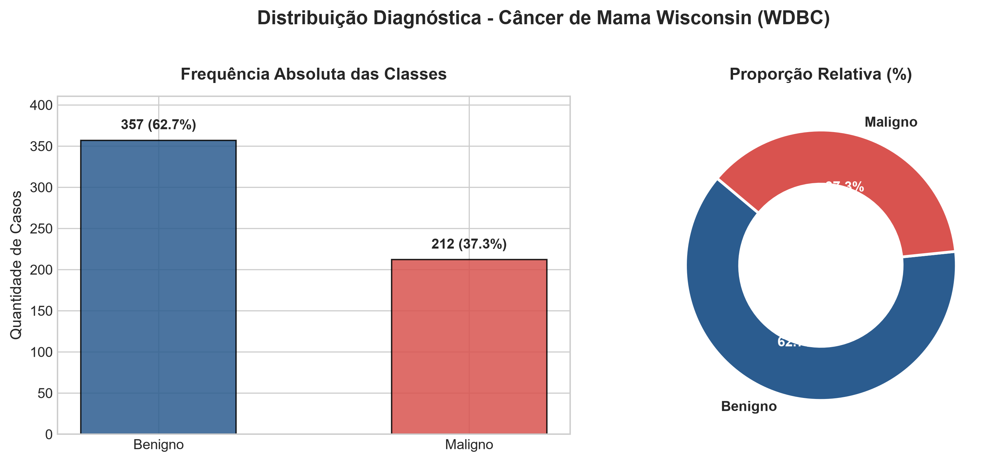
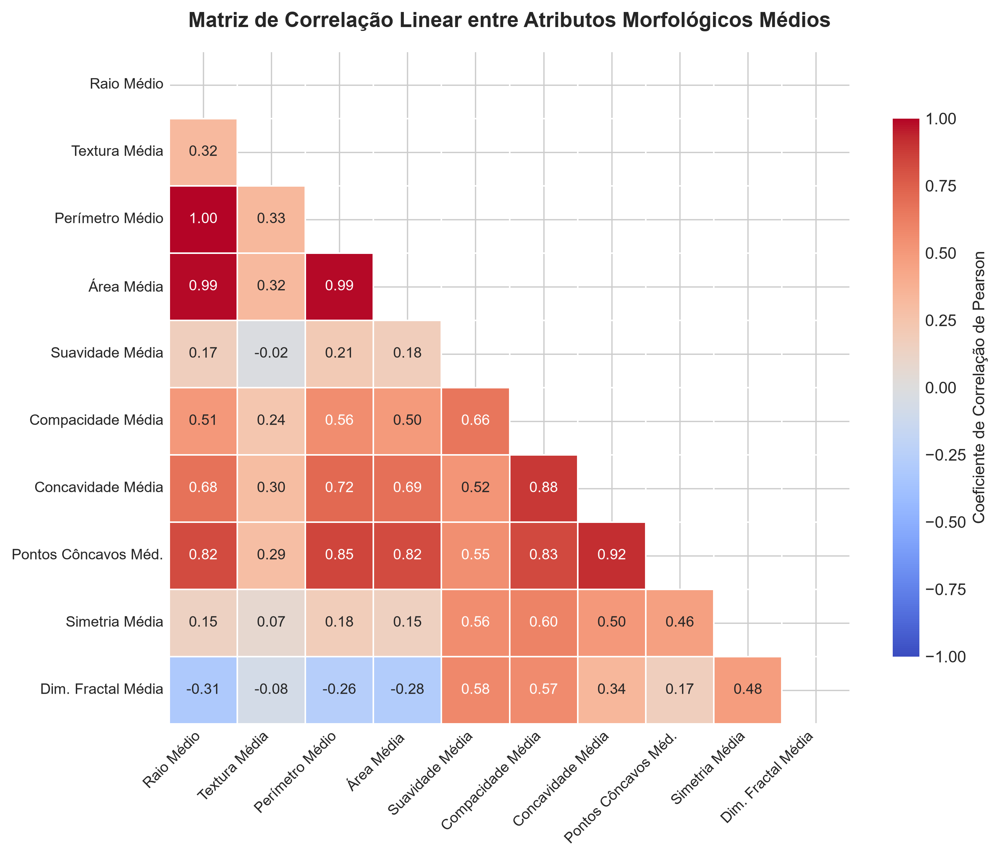
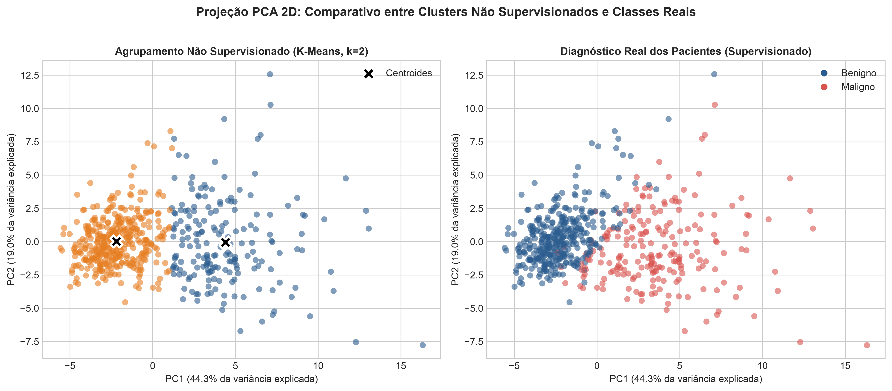
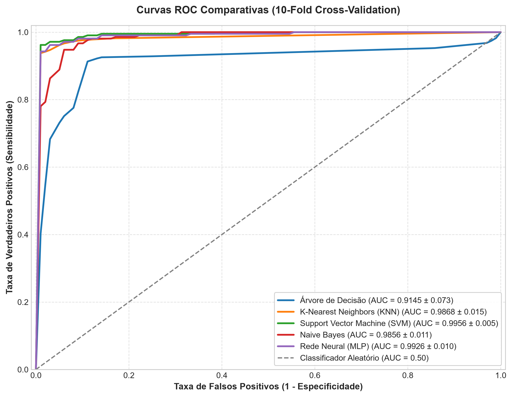
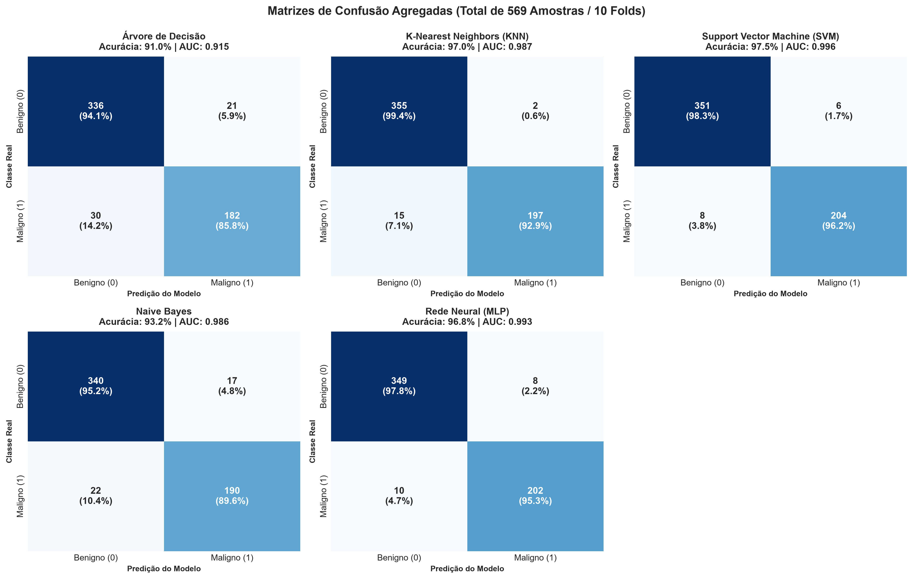

Estudo comparativo de Classificação (SVM, MLP, KNN, Naive Bayes, Árvore de Decisão) e Clusterização (K-Means com PCA) sobre a base pública Breast Cancer Wisconsin (WDBC).
O câncer de mama é a neoplasia maligna de maior incidência em mulheres. O diagnóstico diferencial precoce via biópsia por agulha fina (PAAF) é crucial para o aumento das taxas de sobrevida.


Como os atributos operam em escalas distintas (área > 2000 vs suavidade ~ 0,1), a normalização é mandatória para KNN, SVM, K-Means e Redes Neurais.
🔒 Prevenção de Data Leakage: A padronização foi estritamente calculada dentro de cada fold de treino da validação cruzada.

Hiperparâmetros: Impureza Gini, max_depth=4, min_samples_split=5.
Vantagem: Transparência total e regras de decisão explicáveis para a junta médica.
Hiperparâmetros: k=5 vizinhos, distância euclidiana após Z-score.
Vantagem: Excelente identificação de vizinhança celular de casos sadios.
Hiperparâmetros: Kernel RBF, regularização C=1.0.
Vantagem: Mapeamento não linear de alta dimensionalidade; melhor fronteira de margem.
Hiperparâmetros: Distribuição Gaussiana contínua.
Vantagem: Modelo probabilístico Bayesiano ultra veloz com baseline consistente.
Hiperparâmetros: 2 camadas ocultas (64, 32), ativação ReLU, otimizador Adam.
Vantagem: Alta capacidade de aproximação de funções complexas.
Stratified 10-Fold: Preserva a proporção exata de 62,7% benignos e 37,3% malignos em cada dobra de teste, garantindo rigor estatístico sem viés de partição única.
| Algoritmo | Acurácia (%) | Sensibilidade (Recall) (%) | Especificidade (%) | AUC-ROC (%) | Falsos Negativos (FN) |
|---|---|---|---|---|---|
| Árvore de Decisão | 91,04 ± 3,87 | 85,80 ± 10,24 | 94,13 ± 4,56 | 91,45 ± 7,34 | 30 |
| K-Nearest Neighbors (KNN) | 97,01 ± 1,76 | 92,90 ± 4,90 | 99,44 ± 1,11 | 98,68 ± 1,46 | 15 |
| Support Vector Machine (SVM) 🏆 | 97,54 ± 1,95 | 96,21 ± 3,56 | 98,33 ± 2,83 | 99,56 ± 0,55 | 8 (Menor taxa de erro) |
| Naive Bayes Gaussiano | 93,15 ± 3,08 | 89,57 ± 7,65 | 95,26 ± 4,82 | 98,56 ± 1,12 | 22 |
| Redes Neurais (MLP) | 96,84 ± 1,89 | 95,24 ± 5,63 | 97,75 ± 2,45 | 99,26 ± 1,00 | 10 |


Em oncologia, o custo de um Falso Negativo é fatal (a paciente não recebe o tratamento oportuno). Portanto, um modelo com sensibilidade elevada é prioritário em relação a modelos com menor recall.
O SVM com Kernel RBF cometeu apenas 8 falsos negativos em 212 casos malignos (sensibilidade de 96,21%), consagrando-se como a melhor ferramenta clínica de apoio à decisão.